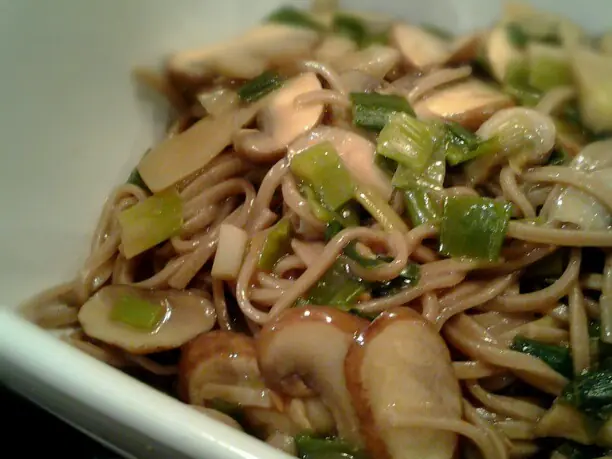

Фото: Lablascovegmenu from London, CC BY 2.0
.jpg){kind=link}
Грибная лапша постная
Ароматный суп с лесными грибами и лапшой на чистом грибном отваре
50 мин4 порц.168 ккал на порциюБ 7 · Ж 1 · У 33Русская кухня
Продукты на 4 порц.
- Лесные грибы (замороженные)300 г
- Вода2000 мл
- Картофель2 шт
- Морковь1 шт
- Лук репчатый1 шт
- Макароны100 г
- Лавровый лист1 шт
- Соль2 ч. л.
- Перец чёрный молотыйпо вкусу
- Укроп по желаниюпо вкусу
Как готовить
- Замороженные грибы, не размораживая, залейте холодной водой и доведите до кипения. Снимите пену и варите на слабом огне 20 минут.
- Добавьте картофель кубиками, морковь на крупной тёрке и мелко нарезанный лук. Варите 10 минут.
- Всыпьте тонкую лапшу (вермишель), перемешайте и варите 5-7 минут, пока она не станет мягкой.
- Посолите, поперчите, положите лавровый лист и прогрейте ещё 2 минуты.
- Снимите с огня, посыпьте укропом и дайте супу постоять под крышкой 10 минут.
Совет. Лапша в кастрюле со временем разбухает. Если варите на 2 дня, отваривайте её отдельно и кладите прямо в тарелку.